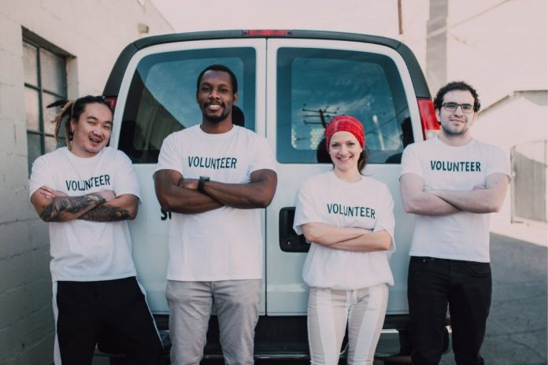

Olá, Sou Núbia Almeida,
Estudante Front-End
e Embaixadora da GEDUC
01_SOBRE MIM > 02_AÇÃO VOLUNTÁRIA
02_AÇÃO VOLUNTÁRIA
05_RECICLAGEM
04_EXPERIÊNCIA

03_EMBAIXADORA DA EDUCAÇÃO
Desenvolvedora Web Front-end com React - CODELAND
(Abr 2022 - Jun 2022)Tecnóloga em Recursos Humanos - UNIP
(Fev 2020 - Jan 2022) 06_FORMAÇÃO
07_ACHO GATO MUITO FOFINHO
- check_circle Estratégia De UX/UI
- check_circle Conceito Criativo
- check_circle Conteúdo Social
 09_MEU ESTILO
09_MEU ESTILO
Entre em contato comigo:
nubyalmeida45@gmail.com
10_CONTATE-ME 11_ADORO CONHECER LUGARES NOVOS
11_ADORO CONHECER LUGARES NOVOS